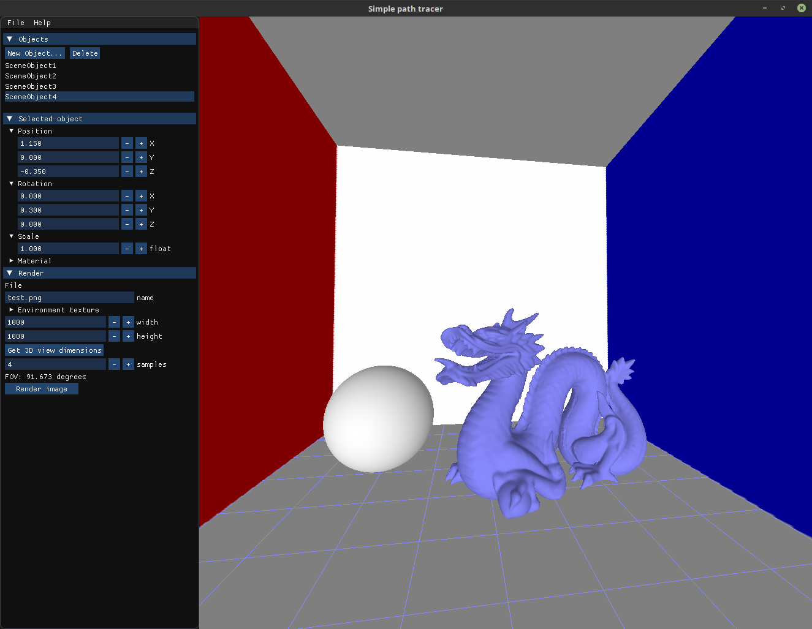
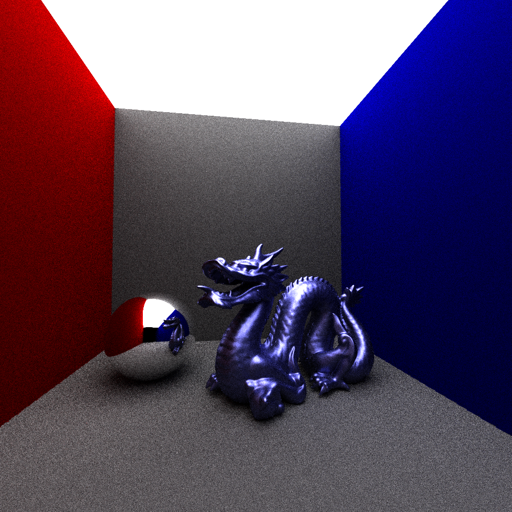

I am a 23-year old beginner programmer living in Helsinki and studying bioinformation technology at Aalto University. I'm on my second year of studies and ready to give my contribution to the society. In addition to all the biological stuff I'm also into 3D, simulations and visually pretty things. I really hope I get to combine these things in the future: pretty biological 3D simulations!
I listed the programming courses I've completed at Aalto university together with other programming experience I have.
Check out my project from Basic Course in Programming Y2!
I work as a course assistant at the basic course in C in spring 2019.
There's info about the group project we did on the C++ course in Projects.
I've seen the horrors of merging on CS-A1121 and ELEC-A7151!
Here are the projects I dare to present publically:
On Basic Course in Programming Y2 we had about two months to write a simple program on python and pyQt5. I crafted a simple software to simulate rigid body collisions in 2D. Arbitrary convex polygons, rectangles and spheres are supported and they can be created inside the program with user given parameters. Additionally the direction of gravity can be changed from a toggle. Watch this nice little demo below:
I used SAT to detect collisions and to determine the collision point. The collisions are handled with the impulse response method.
We made a path tracer as a group project on Object oriented programming with C++. Our team members were Aapo Pajunen, Otto Von Boehm, Sara Barroso and I and we had only one period for this project. I was mostly in charge of creating the GUI in the image below.
In the GUI the user can move freely in a 3D scene. New objects can be added or removed and their position, rotation and size can be edited. Material attributes can be changed as well: color or texture, roughness and emission. The program supports absolute spheres and planes and triangle meshes from Wavefront obj-files. Scenes can be saved to files and loaded through the GUI. Path tracing uses GGX importance sampling for and octrees for mesh intersection detection acceleration.
The scene in the image represents a Cornell box with a light emitting roof, diffuse walls, a highly reflective sphere and a semi-glossy dragon.
Below is a path tracer image of the GUI view with 200 samples per pixel.
The GUI uses GLFW3 for opening the window and OpenGL and GLEW for rendering the 3D view in the viewport. Editing fields are created with ImGui. Meshes are loaded with tinyobjloader, glm is used for linear algebra and lode-png loads textures and saves rendered images. OpenMP parallelization is used to multihread path tracing.
The projects I presented above are course projects and thus they can't be published in github. That is why I decided to craft this little web portfolio for myself. I wrote the html document, stylesheet and javascript code with a text editor and drew the svg icons. The site should scale for all mainstream window sizes and work for both phone and desktop. CSS sure can be challenging sometimes!